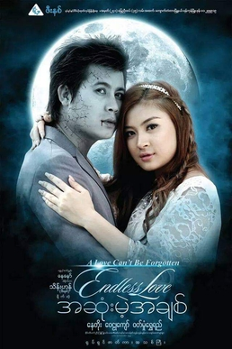

|
 Endless Love is a 2014 Burmese thriller-drama film, directed by Thein Han (Phoenix) starring Nay Toe, Wai Lu Kyaw and Wutt Hmone Shwe Yi. |
|
Made in Heart, is a 2014 Burmese drama film starring Pyay Ti Oo, Moe Hay Ko and Wutt Hmone Shwe Yi.The film, produced by Lucky Seven Film Production,premiered in Myanmar on October 3, 2014.
| Years | Award | Category | Nominee | Result |
| 2014 | Myanmar Motion Picture Academy Awards | Best Actor | Pyay Ti Oo | Won |
| Best Supporting Actress | Wutt Hmone Shwe Yi | Won | ||
| Best Supporting Actor | Zin Wine | Won |